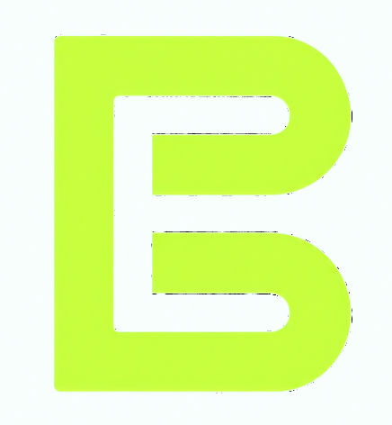

StudyFlow Web
A goal, a realistic routine and a clear next step. Build custom plans, check your target and reschedule without losing completion checks.
Learn→Practice→Review
6 templates + custom goalsOptional device saving
Open tool ↗
Biuret / PlaygroundA small collection with a clear purpose: turn everyday friction into a useful next step. Start with what you need, then choose your tool.
These tools run in your browser. Compare, inspect, organize or focus. Choose a tool and try a sample before adding your own input.
A goal, a realistic routine and a clear next step. Build custom plans, check your target and reschedule without losing completion checks.
Give one task your attention. Follow a focus session with a real break and see your completed-session history.
Validate, format and inspect structured data. Import a local file, sort keys or export a compact result.
Calculate SHA-256, SHA-384 or SHA-512 for a file or text, then compare with a digest from a trusted source.
Count, clean and shape your writing. Review word counts and reading time, undo a change, then export.
Compare two versions line by line, focus on changes, and export a readable patch.
Read the real hostname, query fields and structural warnings without opening the link.
Try another term or clear the filters.
Explore StudyFlow Desktop and CLI, with their actual interface and release status.
Save plans, completed focus sessions and favorite tools on this device by choice. My Work keeps your next step in view.